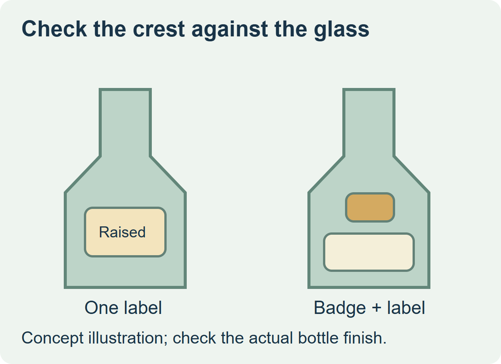
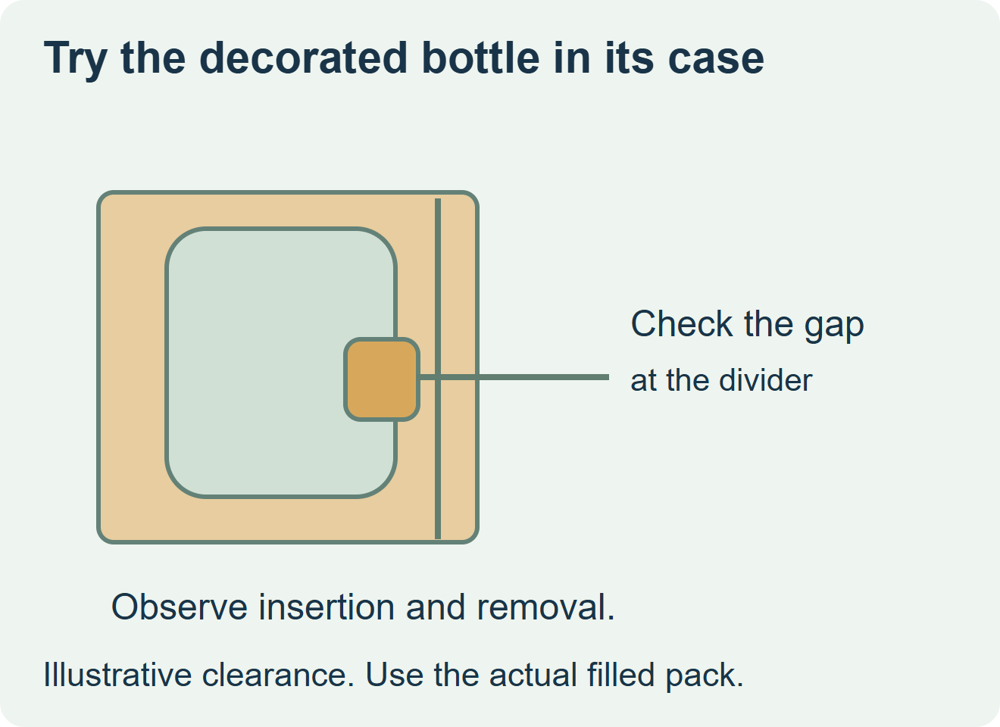

Keep the crest on the main label when that construction gives the intended tactile effect and passes handling. Price a separate medallion when it needs its own thickness, material or location. Before ordering, check that it seats on the actual glass and fits the packed case.


Approve the component and the bottle together
Hold the badge against the actual body or shoulder curve. Check the contact area and edge position on the real glass finish. Also ask how the second component is supplied, placed and inspected relative to the main label. Kandacork describes badge styles and asks buyers to consider the bottle shape, adhesive area and final packing. PGP lists assembly of medallions among its own decorating routes. Confirm the actual supplier and equipment rather than assuming a label converter supplies both. Kandacork’s bottle badge overview and PGP Glass decoration and assembly options
| Buyer requirement | Route to sample | What to prove on the finished bottle |
|---|---|---|
| Relief can sit inside the main label | Embossed or raised label made with the proposed construction | Appearance, attachment, and clearance in the actual packing route. |
| Crest needs a separate material or higher relief | Badge plus the planned printed label | Glass contact, stable placement, clearance and approved handling after assembly. |
| The pack cannot clear the proposed protrusion | Reduce the relief, move it, or revise the pack with its owner | Inspect insertion, normal removal and contact after the approved change. |


Compare one accepted decorated bottle
Ask for the component, tooling or setup, sample and placement costs in the same quote scope. For the badge route, include any positioning fixture and the additional handling or assembly step the bottler confirms. Inspect the actual bottle and divider during a representative packing and handling trial. If the badge and the printed label have different quantities or replacement lead times, agree how the two stocks will be ordered and reconciled.
Discuss the unresolved label requirement
Send the bottle surface and curve, crest drawing and target relief, badge or label sample, intended placement and application method, carton or divider dimensions and quantities. Review wine and spirits label options and prepare a label specification inquiry. The contact page opens an email draft and lists email or WhatsApp for attachments. Supply, proof options, testing, pricing and timing require project confirmation.